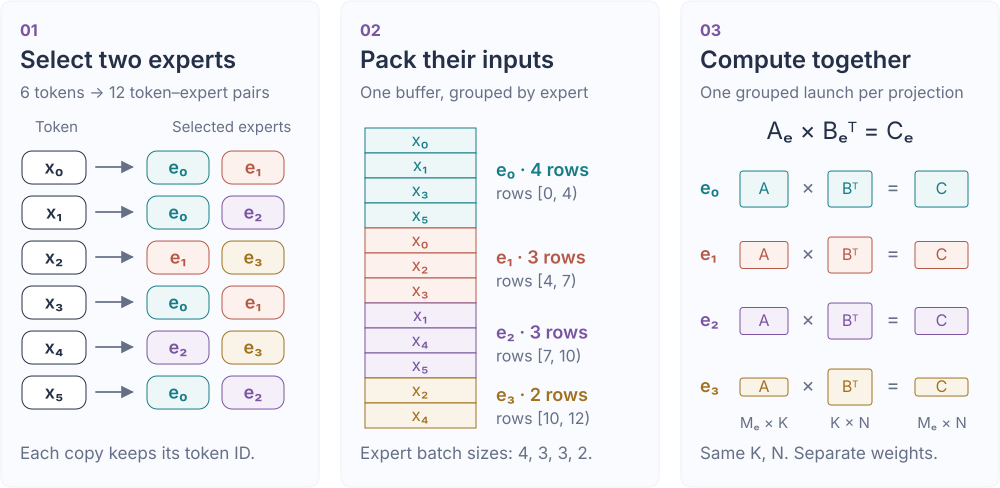
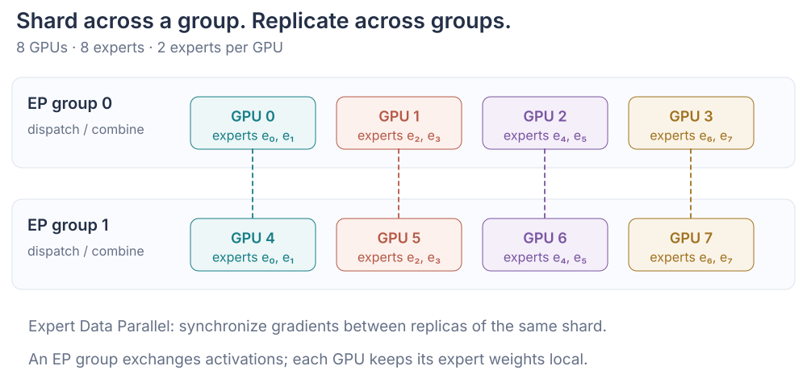
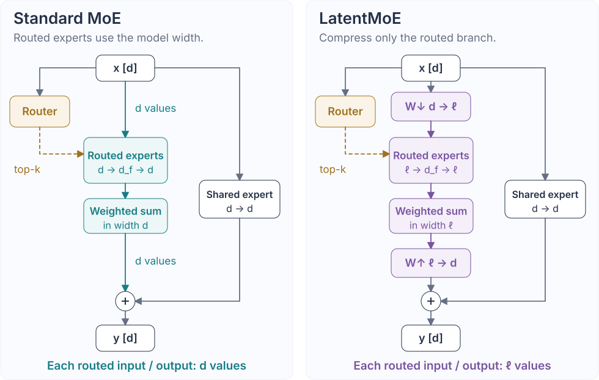

MoE: more parameters with sparse expert computation
In a dense Transformer, every token passes through the same feed-forward network (FFN). Increasing its intermediate width adds parameters, but it also increases the computation for every token. To grow the parameter count without paying that cost, we need a way for each token to use only part of the network.
A Mixture-of-Experts (MoE) layer does this by replacing one FFN with a collection of FFNs, called experts. A learned router selects a few experts for each token, so only those experts need to run for that token. With the expert size and the number selected per token held fixed, adding experts increases the total expert parameters while keeping the expert computation per token unchanged.
This selective execution changes how we batch the computation. A dense FFN applies the same weights to all tokens in a batch, so each projection can be computed as one large matrix multiplication. In MoE, the router may select different experts for different tokens. We therefore group the input rows by expert, giving each expert its own batch. Each projection now requires multiple matrix multiplications whose row counts depend on how many tokens each expert receives.
When experts are distributed across GPUs, forming these batches also requires communication: token representations must reach the GPUs that hold their selected experts, and the expert outputs must return to be combined. Efficient MoE execution therefore depends on both computing the expert batches and moving data between devices. We begin with the computation, looking at how the number of tokens in a batch affects the matrix multiplications inside an FFN.
1. FFN and routing: how tokens reach experts
We use a SwiGLU FFN for each expert. It projects each token into two intermediate vectors, uses one to gate the other, and projects the result back to the input width. For a batch of \(T\) tokens with input width \(d\) and intermediate width \(d_f\), the computation is
Here \(X\in\mathbb R^{T\times d}\) contains one token representation per row, \(W_g,W_u\in\mathbb R^{d_f\times d}\), and \(W_d\in\mathbb R^{d\times d_f}\). The gate uses the elementwise activation \(\operatorname{SiLU}(z)=z/(1+e^{-z})\), and \(\odot\) denotes elementwise multiplication.
Each of these three projections is a general matrix multiplication (GEMM). The gate and up projections read the same input \(X\) and each produce a tensor of shape \([T,d_f]\). After the activation and elementwise product, the down projection maps the gated features back to \([T,d]\).
All \(T\) tokens in a batch use the same projection weights. A GEMM kernel processes several tokens together, allowing them to reuse a loaded weight block.
For example, a kernel can load a block of weights and apply it to 64 tokens. The same loaded values then contribute to 64 token outputs, spreading the cost of that load across the group. This allows the kernel to perform more computation per weight byte loaded.
In MoE, routing divides the input tokens among experts, so each expert may have a much smaller batch to work with. With only one or two tokens, there is little opportunity to share the cost of loading weights across tokens.
Arithmetic intensity measures how much computation is performed per byte transferred. The gate projection \(G=XW_g^\top\) performs about \(2Tdd_f\) floating-point operations (FLOPs). Counting one read of each of its \(dd_f\) weights at \(b\) bytes per weight gives the idealized ratio
For bfloat16 (BF16) weights, \(b=2\), giving roughly \(T\) FLOPs per weight byte. This estimate ignores activation traffic and repeated weight reads, but it explains why an FFN processing very few tokens can spend much of its time reading weights.
Triton GEMM kernel and launcher
Let \(M=T\), \(K=d\), and \(N=d_f\). The kernel divides the \(M\times N\) output into \(B_M\times B_N\) tiles that can be computed independently. With one Triton program assigned to each output tile, the launcher starts
At fixed \(N\), a smaller \(M\) can produce fewer output tiles, leaving less work to run in parallel on the GPU.
Within each program, computing the output tile requires summing products over the input width \(K\). The program walks through that dimension in blocks of \(B_K\), accumulating the result. The code names the tile sizes \(B_M,B_N,B_K\) as BLOCK_M, BLOCK_N, and BLOCK_K. Since matrix dimensions need not be exact multiples of these sizes, loads and stores use masks to exclude out-of-bounds elements.
@triton.autotune(
configs=[
triton.Config(
{"BLOCK_M": 64, "BLOCK_N": 64, "BLOCK_K": 32},
num_warps=4,
),
triton.Config(
{"BLOCK_M": 128, "BLOCK_N": 64, "BLOCK_K": 32},
num_warps=8,
),
],
key=["M", "N", "K"],
)
@triton.jit
def _matmul_kernel(
A, B, C,
M: tl.constexpr,
N: tl.constexpr,
K: tl.constexpr,
stride_am, stride_ak,
stride_bk, stride_bn,
stride_cm, stride_cn,
BLOCK_M: tl.constexpr,
BLOCK_N: tl.constexpr,
BLOCK_K: tl.constexpr,
):
pid = tl.program_id(0)
num_pid_n = tl.cdiv(N, BLOCK_N)
pid_m = pid // num_pid_n
pid_n = pid % num_pid_n
rows = pid_m * BLOCK_M + tl.arange(0, BLOCK_M)
cols = pid_n * BLOCK_N + tl.arange(0, BLOCK_N)
acc = tl.zeros((BLOCK_M, BLOCK_N), tl.float32)
for start_k in range(0, K, BLOCK_K):
ks = start_k + tl.arange(0, BLOCK_K)
a = tl.load(
A + rows[:, None] * stride_am + ks[None, :] * stride_ak,
mask=(rows[:, None] < M) & (ks[None, :] < K),
other=0.0,
)
b = tl.load(
B + ks[:, None] * stride_bk + cols[None, :] * stride_bn,
mask=(ks[:, None] < K) & (cols[None, :] < N),
other=0.0,
)
acc += tl.dot(a, b)
tl.store(
C + rows[:, None] * stride_cm + cols[None, :] * stride_cn,
acc.to(C.dtype.element_ty),
mask=(rows[:, None] < M) & (cols[None, :] < N),
)
def triton_matmul(a, b):
assert a.dtype == b.dtype
assert a.ndim == b.ndim == 2 and a.shape[1] == b.shape[0]
a, b = a.contiguous(), b.contiguous()
M, K = a.shape
_, N = b.shape
out = torch.empty((M, N), device=a.device, dtype=a.dtype)
grid = lambda META: (
triton.cdiv(M, META["BLOCK_M"])
* triton.cdiv(N, META["BLOCK_N"]),
)
_matmul_kernel[grid](
a, b, out, M, N, K,
a.stride(0), a.stride(1),
b.stride(0), b.stride(1),
out.stride(0), out.stride(1),
)
return outRouting: select experts and count their tokens
For an MoE expert, the batch size is determined by routing. Let the layer contain \(E\) experts. For each of the \(T\) input tokens \(x_t\), our router produces scores \(r_t\in\mathbb R^E\) and selects the \(k\) highest-scoring experts.
Let \(\mathcal T_t\) contain the selected expert indices. We apply a softmax over their scores to obtain weights \(p_{t,e}\), then use those weights to combine the expert outputs. Writing \(F_e\) for expert \(e\)'s SwiGLU FFN with its own weights,
With top-2 routing, each token supplies one input row to each of two experts. We call each assignment \((t,e)\) a token–expert pair, so \(T\) input tokens produce \(2T\) expert input rows. Collecting the rows assigned to expert \(e\) gives its batch size:
A dense FFN processes all \(T\) tokens with the same weights. Expert \(e\) processes only the \(M_e\) tokens assigned to it, using its own weights. Each of its gate and up projections therefore has shape
Each token contributes \(k\) rows, so \(\sum_eM_e=Tk\). The average is \(Tk/E\), while the actual counts depend on the routing decisions: some experts receive more rows, and others may receive none. Weight reuse depends on each expert's own \(M_e\), so a large total batch does not necessarily give every expert a large batch.
These routing decisions give us a collection of matrix multiplications with different row counts. A straightforward implementation launches each nonempty expert's projection separately, paying launch overhead for every active expert. Grouped GEMM schedules the projections together; to use it in our implementation, we first arrange the input rows by expert. The figure below previews this path, with packing and grouped scheduling developed in the next section.

2. Grouped GEMM: compute uneven expert batches
Packing: place each expert’s inputs together
We first sort the expanded rows by expert. If counts[e] = M_e, an exclusive prefix sum gives each expert's interval:
We keep the inverse permutation because outputs must later return to their original tokens. The packed activation is one contiguous tensor of shape \([Tk,d]\); the expert weights are stacked as \([E,N,K]\); and the prefix offsets tell the kernel which expert owns each row range.
For the counts \([4,3,3,2]\) in the figure, the exclusive offsets are \([0,4,7,10,12]\). Expert 0 therefore reads packed rows [0:4], expert 1 reads [4:7], and so on. The rows move; the expert weights do not. This distinction becomes important again when we distribute the same layout across GPUs.
| Expert | \(M_e\) | Packed interval | Local GEMM |
|---|---|---|---|
| 0 | 4 | [0:4] | \([4,K][K,N]\) |
| 1 | 3 | [4:7] | \([3,K][K,N]\) |
| 2 | 3 | [7:10] | \([3,K][K,N]\) |
| 3 | 2 | [10:12] | \([2,K][K,N]\) |
Scheduling: assign expert tiles to GPU programs
Batched GEMM assumes every problem has the same \(M,N,K\). Grouped GEMM instead accepts a list of problems and schedules all of their output tiles in one launch. For MoE, only \(M_e\) changes; \(N\) and \(K\) are fixed by the expert architecture:
| Execution | Allowed shapes | Scheduling consequence |
|---|---|---|
| One launch per expert | Any \(M_e,N,K\) | Simple, but pays launch and scheduling overhead \(E\) times |
| Batched GEMM | The same \(M,N,K\) for every expert | Regular addressing, but unequal \(M_e\) requires padding |
| Grouped GEMM | Different \(M_e\), usually shared \(N,K\) | One launch schedules a ragged pool of expert output tiles |
We represent the row-tile schedule with two arrays: tile_expert[pid_m] identifies the expert for each row tile, and tile_m[pid_m] gives the tile's index within that expert. Grid axis 0 ranges over these row tiles, while axis 1 covers the output-column tiles. Once a program loads its expert ID and row interval, it accumulates products along \(K\) as in the single-GEMM kernel.
| Kernel argument | Shape or role |
|---|---|
A | Packed activation rows, \([\sum_e M_e,K]\) |
B | One weight matrix per expert, \([E,N,K]\); the kernel reads \(B_e^\top\) |
C | Packed output rows, \([\sum_e M_e,N]\) |
offsets | \([E+1]\) prefix offsets; rows for expert \(e\) are [offsets[e]:offsets[e+1]] |
tile_expert, tile_m | The ragged launch schedule: expert ID and local row-tile ID for each program_id(0) |
BLOCK_M, BLOCK_N, BLOCK_K | Compile-time tile sizes for expert rows, output columns, and the reduction loop |
contiguous M-grouped GEMM kernel and launcher
def make_contiguous_schedule(counts, block_m, *, device):
expert_tiles, row_tiles = [], []
for expert, count in enumerate(counts.tolist()):
for row_tile in range((count + block_m - 1) // block_m):
expert_tiles.append(expert)
row_tiles.append(row_tile)
return (
torch.tensor(expert_tiles, device=device, dtype=torch.int32),
torch.tensor(row_tiles, device=device, dtype=torch.int32),
)
@triton.jit
def _m_grouped_nt_contiguous(
A, B, C, offsets,
tile_expert, tile_m,
N: tl.constexpr,
K: tl.constexpr,
stride_am, stride_ak,
stride_be, stride_bk, stride_bn,
stride_cm, stride_cn,
BLOCK_M: tl.constexpr,
BLOCK_N: tl.constexpr,
BLOCK_K: tl.constexpr,
):
pid_m = tl.program_id(0)
pid_n = tl.program_id(1)
expert = tl.load(tile_expert + pid_m)
local_tile_m = tl.load(tile_m + pid_m)
start = tl.load(offsets + expert)
end = tl.load(offsets + expert + 1)
rows = local_tile_m * BLOCK_M + tl.arange(0, BLOCK_M)
cols = pid_n * BLOCK_N + tl.arange(0, BLOCK_N)
acc = tl.zeros((BLOCK_M, BLOCK_N), tl.float32)
# B is [E, N, K]. Pointer arithmetic exposes B[expert].T as [K, N].
for start_k in range(0, K, BLOCK_K):
ks = start_k + tl.arange(0, BLOCK_K)
a = tl.load(
A + (start + rows)[:, None] * stride_am
+ ks[None, :] * stride_ak,
mask=(start + rows[:, None] < end) & (ks[None, :] < K),
other=0.0,
)
b = tl.load(
B + expert * stride_be
+ ks[:, None] * stride_bk
+ cols[None, :] * stride_bn,
mask=(ks[:, None] < K) & (cols[None, :] < N),
other=0.0,
)
acc += tl.dot(a, b)
tl.store(
C + (start + rows)[:, None] * stride_cm
+ cols[None, :] * stride_cn,
acc.to(C.dtype.element_ty),
mask=(start + rows[:, None] < end) & (cols[None, :] < N),
)
def grouped_mm_contiguous(
a, b, offsets, *, block_m=32, block_n=64, block_k=32
):
# a: [sum_e M_e, K], b: [E, N, K], offsets: [E + 1]
assert a.ndim == 2 and b.ndim == 3
assert b.shape[2] == a.shape[1]
assert a.dtype == b.dtype
a, b = a.contiguous(), b.contiguous()
counts = offsets[1:] - offsets[:-1]
tile_expert, tile_m = make_contiguous_schedule(
counts.cpu(), block_m, device=a.device
)
out = torch.empty(
(a.shape[0], b.shape[1]), device=a.device, dtype=a.dtype
)
if tile_expert.numel() == 0:
return out
grid = (
tile_expert.numel(),
triton.cdiv(b.shape[1], block_n),
)
_m_grouped_nt_contiguous[grid](
a, b, out, offsets, tile_expert, tile_m,
b.shape[1], a.shape[1],
a.stride(0), a.stride(1),
b.stride(0), b.stride(2), b.stride(1),
out.stride(0), out.stride(1),
BLOCK_M=block_m,
BLOCK_N=block_n,
BLOCK_K=block_k,
num_warps=4,
)
return outThe launcher copies the expert counts to the CPU with counts.cpu() before building the schedule. To reduce this host-side preparation, the schedule could instead be constructed on the GPU, or work could be assigned by a persistent scheduler as in Triton's official Group GEMM tutorial. The expert-local matrix multiplications remain the same under either scheduling approach.
SwiGLU forward: compute and combine expert outputs
We apply the grouped kernel with \(W_g\) and \(W_u\) to compute \(G\) and \(U\), form \(\operatorname{SiLU}(G)\odot U\), and apply it with \(W_d\) to project the result back to the model width.
The resulting outputs are still grouped by expert. To recover the output for each original token, we multiply each expert output by \(p_{t,e}\) and accumulate the \(k\) contributions at that token's position.
The function below takes the selected expert indices and weights, both shaped \([T,k]\), packs the inputs, computes the expert outputs, and combines them. It saves the intermediate activations and routing metadata in cache for backward.
SwiGLU forward: packing, grouped projections, and weighted combine
def selected_expert_path_forward(
x, selected_expert, selected_weight, w_gate, w_up, w_down
):
# Pack token-expert pairs in expert order.
T, top_k = selected_expert.shape
token_ids = torch.arange(T, device=x.device).repeat_interleave(top_k)
expert_ids = selected_expert.reshape(-1)
order = torch.argsort(expert_ids, stable=True)
token_ids, expert_ids = token_ids[order], expert_ids[order]
pair_weight = selected_weight.reshape(-1)[order]
counts = torch.bincount(expert_ids, minlength=w_gate.shape[0])
offsets = torch.cat([
torch.zeros(1, device=x.device, dtype=torch.int32),
counts.cumsum(0).to(torch.int32),
])
# Compute each expert's SwiGLU FFN.
a = x[token_ids].contiguous()
gate = grouped_mm_contiguous(a, w_gate, offsets)
up = grouped_mm_contiguous(a, w_up, offsets)
hidden = torch.nn.functional.silu(gate) * up
pair_out = grouped_mm_contiguous(hidden, w_down, offsets)
# Accumulate weighted expert outputs at their original token positions.
out = torch.zeros(x.shape, device=x.device, dtype=torch.float32)
out.index_add_(0, token_ids, pair_out.float() * pair_weight[:, None])
cache = (
token_ids, expert_ids, pair_weight, order, offsets,
a, gate, up, hidden, pair_out,
)
return out.to(x.dtype), cacheSwiGLU backward: reuse grouped GEMM gradients
The full SwiGLU backward uses the gradient of a grouped GEMM for each of its three projections. We first implement that operation, then assemble the gradients through the weighted combine, down projection, and gate/up branches.
Grouped GEMM backward: one projection
Each expert projection has two gradients. For one grouped linear \(C_e=A_eB_e^\top\),
The input gradient is another grouped GEMM, so we can reuse grouped_mm_contiguous. The weight gradient sums over \(M_e\) tokens for each expert. The kernel below assigns each program a tile of an expert's weight gradient and loops over that expert's tokens. Together, these two operations form grouped_mm_backward.
Grouped GEMM backward: input and weight gradients
@triton.jit
def _grouped_weight_grad_kernel(
A, dC, dB, offsets,
N: tl.constexpr,
K: tl.constexpr,
MAX_M: tl.constexpr,
stride_am, stride_ak,
stride_cm, stride_cn,
stride_be, stride_bk, stride_bn,
BLOCK_M: tl.constexpr,
BLOCK_N: tl.constexpr,
BLOCK_K: tl.constexpr,
):
pid = tl.program_id(0)
tiles_k = tl.cdiv(K, BLOCK_K)
tiles_n = tl.cdiv(N, BLOCK_N)
expert = pid // (tiles_k * tiles_n)
rem = pid % (tiles_k * tiles_n)
tile_k = rem // tiles_n
tile_n = rem % tiles_n
start = tl.load(offsets + expert)
end = tl.load(offsets + expert + 1)
ks = tile_k * BLOCK_K + tl.arange(0, BLOCK_K)
ns = tile_n * BLOCK_N + tl.arange(0, BLOCK_N)
acc = tl.zeros((BLOCK_K, BLOCK_N), tl.float32)
# acc = A_e.T @ dC_e; only this expert's M_e rows are valid.
for row_start in range(0, MAX_M, BLOCK_M):
rows = row_start + tl.arange(0, BLOCK_M)
a = tl.load(
A + (start + rows)[:, None] * stride_am
+ ks[None, :] * stride_ak,
mask=(start + rows[:, None] < end) & (ks[None, :] < K),
other=0.0,
)
dc = tl.load(
dC + (start + rows)[:, None] * stride_cm
+ ns[None, :] * stride_cn,
mask=(start + rows[:, None] < end) & (ns[None, :] < N),
other=0.0,
)
acc += tl.dot(tl.trans(a), dc)
# Store dB as [E, N, K], the same NT layout used in forward.
tl.store(
dB + expert * stride_be
+ ns[:, None] * stride_bn
+ ks[None, :] * stride_bk,
tl.trans(acc).to(dB.dtype.element_ty),
mask=(ns[:, None] < N) & (ks[None, :] < K),
)
def grouped_weight_grad(
a, dc, offsets, *, block_m=32, block_n=64, block_k=32
):
a, dc = a.contiguous(), dc.contiguous()
E = offsets.numel() - 1
K, N = a.shape[1], dc.shape[1]
db = torch.empty((E, N, K), device=a.device, dtype=a.dtype)
max_m = max(1, int((offsets[1:] - offsets[:-1]).max().item()))
grid = (
E * math.ceil(K / block_k) * math.ceil(N / block_n),
)
_grouped_weight_grad_kernel[grid](
a, dc, db, offsets, N, K, max_m,
a.stride(0), a.stride(1),
dc.stride(0), dc.stride(1),
db.stride(0), db.stride(2), db.stride(1),
BLOCK_M=block_m,
BLOCK_N=block_n,
BLOCK_K=block_k,
num_warps=4,
)
return db
def grouped_mm_backward(a, b, dc, offsets):
# Forward is C_e = A_e @ B_e.T with B=[E,N,K].
da = grouped_mm_contiguous(
dc, b.transpose(1, 2).contiguous(), offsets
)
db = grouped_weight_grad(a, dc, offsets)
return da, dbSwiGLU backward: the complete expert path
We now follow the complete forward in reverse, starting with the weighted combine. Let \(H_{t,e}=F_e(x_t)\) denote expert \(e\)'s unweighted output for token \(t\). The output gradient \(dY_t\) gives
We pass \(dH\) through the down projection using grouped_mm_backward, differentiate the SiLU gate and elementwise product, and call grouped_mm_backward for the gate and up projections. Finally, we add the input-gradient contributions at their original token positions and restore the routing-weight gradients to \([T,k]\) order.
The function below consumes the cache returned by selected_expert_path_forward. Its outputs are the gradients of the token inputs, selected routing weights, and three expert weight tensors. The router's score computation is differentiated later in Section 5; the selected expert indices stay fixed here.
SwiGLU backward: combine, gating, and three projections
def silu_grad(x):
s = torch.sigmoid(x)
return s * (1.0 + x * (1.0 - s))
def selected_expert_path_backward(
dout, cache, w_gate, w_up, w_down, x_shape, routing_shape
):
(token_ids, _, pair_weight, order, offsets,
a, gate, up, hidden, pair_out) = cache
d_pair_out = (dout[token_ids].float() * pair_weight[:, None]).to(pair_out.dtype)
d_pair_weight = (
dout[token_ids].float() * pair_out.float()
).sum(dim=1)
d_hidden, d_w_down = grouped_mm_backward(
hidden, w_down, d_pair_out, offsets
)
d_gate = d_hidden * up * silu_grad(gate)
d_up = d_hidden * torch.nn.functional.silu(gate)
d_a_gate, d_w_gate = grouped_mm_backward(
a, w_gate, d_gate, offsets
)
d_a_up, d_w_up = grouped_mm_backward(
a, w_up, d_up, offsets
)
d_x = torch.zeros(x_shape, device=dout.device, dtype=dout.dtype)
d_x.index_add_(0, token_ids, d_a_gate + d_a_up)
# d_pair_weight is expert-major; scatter it back to token/top-k order.
d_routing_flat = torch.zeros(
routing_shape.numel(), device=dout.device, dtype=pair_weight.dtype
)
d_routing_flat.scatter_(0, order, d_pair_weight.to(pair_weight.dtype))
return (
d_x,
d_routing_flat.reshape(routing_shape.shape),
d_w_gate,
d_w_up,
d_w_down,
)Computing gate and up in one grouped GEMM launch
Gate and up read the same packed inputs, and neither projection depends on the other's output. A common optimization is to combine them into one wider projection, as in Megatron-LM's grouped experts. Store their weights together as \(W_{gu}\in\mathbb R^{E\times 2d_f\times d}\), with gate channels followed by up channels within each expert. The grouped GEMM kernel above can then compute both projections in one launch with \(N=2d_f\), removing one GEMM launch from the forward pass.
def grouped_swiglu_forward_combined(a, w_gu, w_down, offsets):
# a: packed inputs [sum_e M_e, d]
# w_gu: [E, 2*d_f, d], with gate weights followed by up weights
gu = grouped_mm_contiguous(a, w_gu, offsets)
gate, up = gu.chunk(2, dim=-1)
hidden = torch.nn.functional.silu(gate) * up
pair_out = grouped_mm_contiguous(hidden, w_down, offsets)
return pair_out, (gate, up, hidden)The split creates two views of the combined output. SiLU and the elementwise product follow, then a second grouped GEMM computes the down projection. Saving gate, up, and hidden preserves the intermediates needed by the backward above; the gate and up weight gradients can be concatenated along dimension 1 to match w_gu.
3. Distributed communication: exchange tensors across GPUs
Grouped GEMM handles computation once an expert’s inputs and weights are on the same GPU. As we add experts, storing all of their weights on every GPU becomes increasingly expensive. Distributing experts across GPUs reduces the memory required on each device, but the router may then assign a token to an expert on another GPU. Its input must reach that GPU for computation, and the result must return to be combined with the token’s other expert outputs.
In the usual one-process-per-GPU setup, these transfers require communication between processes. To implement them, we need to identify the participating processes, specify which ones communicate, and choose how they exchange tensors.
Ranks: identify processes and their GPUs
In a common CUDA training setup, one operating-system process controls one GPU. torchrun starts the processes and provides several identifiers:
| Term | Meaning |
|---|---|
| Global rank | The process index across the entire distributed job, from 0 to world_size - 1. |
LOCAL_RANK | The process index inside the current node. We usually use it to select the local CUDA device. |
| Group rank | The process index inside one particular ProcessGroup, from 0 to group_size - 1. |
| World size | The number of processes in the default world group. |
| Group size | The number of processes that participate in one ProcessGroup. |
These numbers need not match. In an eight-GPU job, an EP group may contain global ranks [4,5,6,7]. Global rank 5 is then group rank 1, while its LOCAL_RANK depends on which node hosts it.
ProcessGroup: choose which ranks communicate
A ProcessGroup is not merely a convenient list of ranks. It determines which processes participate in an operation, their order inside that group, and therefore the scope in which a collective occurs. The same global rank can simultaneously belong to an EP group, an Expert-DP group, and a Dense-DP group.
Passing group=None uses the default world group. Passing group=ep_group restricts the operation to that EP group; ranks outside it do not contribute data to that collective. Participating processes must issue compatible collectives in a consistent order. If one process enters an all-reduce while a peer enters an all-to-all—or simply reaches the same calls in a different order—the job can hang.
Point-to-point and collectives: who participates?
send and recv name a specific source and destination. They are point-to-point operations: only the two peers exchange that message. A collective describes a communication pattern for the whole ProcessGroup. Every member participates in a broadcast, reduction, gather, scatter, all-to-all, or barrier according to the same operation contract.
Collectives: a four-rank example
Use four ranks, numbered 0 through 3. For scalar examples, rank \(r\) begins with \([r]\). Scatter starts with \([0,1,2,3]\) on rank 0; reduce-scatter starts with \([r,r,r,r]\) on rank \(r\); and all-to-all starts with four destination segments \([i0,i1,i2,i3]\) on source \(i\). The table first states the communication pattern, then shows the concrete result and where we commonly use it:
| Operation | Meaning | Four-rank result | Typical use |
|---|---|---|---|
broadcast(src=0) | One rank copies the same tensor to every rank. | Every rank receives [0] from rank 0. | Parameter or configuration initialization |
reduce(dst=0, SUM) | Every rank reduces into one destination. | [0]+[1]+[2]+[3] gives [6] on rank 0. | Collecting a reduced result on one rank |
all_reduce(SUM) | Reduce, then give the result to every rank. | Every rank receives [6]. | DDP gradient synchronization |
scatter(src=0) | One rank splits a tensor and sends one shard to each rank. | Rank \(r\) receives [r] from rank 0's [0,1,2,3]. | Distributing input or state shards |
gather(dst=0) | Every rank sends one shard to a single destination. | Rank 0 collects [0,1,2,3]. | Collecting distributed results |
all_gather | Gather, then give all shards to every rank. | Every rank receives [0,1,2,3]. | Materializing FSDP parameter shards |
reduce_scatter(SUM) | Reduce tensors, then leave one result shard on each rank. | The sum is [6,6,6,6]; rank \(r\) keeps its \(r\)-th [6]. | Sharded gradient synchronization |
all_to_all | Every rank sends a different segment to every rank. | Destination \(j\) receives [0j,1j,2j,3j]. | Expert Parallel dispatch and combine |
send/recv | One explicitly named rank communicates with one peer. | If rank 0 sends [0] to rank 2, only rank 2 receives that message. | Pipeline Parallel stage communication |
barrier | Wait until every group member reaches the same point. | No tensor changes; no rank returns early. | Synchronization and debugging |
In data semantics, an all-reduce can be decomposed into a reduce-scatter followed by an all-gather:
The equality describes the result, not a promise that every backend implements all-reduce with those exact internal steps. It is nevertheless a useful way to remember the difference: reduce-scatter leaves each rank with one reduced shard, and all-gather replicates all of those shards again.
All-to-all has a different shape. If we arrange source ranks as rows and destination segments as columns, communication transposes this segment matrix:
PyTorch provides all_to_all_single for this exchange, including unequal block sizes. Section 4.3 walks through its split arguments before using it for dispatch.
Parallel training: where each collective is used
Replicated gradients commonly use all-reduce. FSDP- and ZeRO-style sharding commonly pair reduce-scatter with all-gather so that gradients, parameters, or optimizer state need not remain replicated. Expert Parallel dispatch and combine use all-to-all because every source may send a different group of token rows to every expert owner.
4. Expert Parallel: distribute experts across GPUs
We can now apply those communication primitives to the ragged expert batches. The expert weights stay with their owner rank. Token rows move through an all-to-all dispatch, the owner executes its local grouped GEMM, and the resulting branch outputs return through an all-to-all combine.
4.1 Why EP: save weight memory and enlarge expert batches
With pure data parallelism, every rank stores all experts and routes only its local tokens. Each expert receives roughly \(T_{\mathrm{local}}k/E\) rows, and training must synchronize every replicated expert gradient. This wastes memory and can leave each expert GEMM too small.
Expert Parallelism makes a different trade: each EP group partitions the expert weights, and token activations move to their owners. An EP rank stores only \(E/P_{\mathrm{ep}}\) experts and aggregates routes from all ranks in its group. Under balanced routing, pure DP and EP give an expert approximately
The factor \(P_{\mathrm{ep}}\) can increase \(M_e\), making each local expert GEMM larger, while sharding reduces expert-weight memory per rank. The price is two activation exchanges: dispatch inputs to expert owners and return expert outputs to their source ranks.
4.2 Process groups: define who communicates
Each EP group holds a complete set of experts, partitioned across its ranks. Replicating that partition creates another EP group. Ranks that hold matching expert shards—global ranks 1 and 5 in the diagram below—form an Expert-DP group to synchronize their gradients:
- EP group: partition expert weights and exchange token activations for dispatch/combine.
- Expert-DP group: synchronize corresponding expert gradients across replicated EP groups.
- Dense-DP group: synchronize gradients of the router and other dense layers, such as non-MoE MLPs.
Note: We leave fully sharded and hybrid sharded data parallelism (FSDP/HSDP) out of scope. These methods add parameter sharding to data parallel training, all-gathering full parameters for computation and releasing the gathered copies when no longer needed. Parallel strategies can be combined flexibly depending on the model and hardware; there is no single fixed layout. Here we focus on a simple combination of DP and EP.
The router and other dense layers are replicated across all ranks in this example, so their Dense-DP group is the world group.

| Pure data parallelism | Expert Parallelism | |
|---|---|---|
| Expert weights per rank | All \(E\) experts | \(E/P_{\mathrm{ep}}\) experts |
| Tokens visible to one expert | One rank's local tokens | Routes aggregated across the EP group |
| Training gradients | Every expert replica must synchronize | Different owners do not synchronize with one another; replicas of the same shard still do |
| Inference trade-off | No activation exchange, but all expert weights are replicated | Weights are sharded, but dispatch and combine add latency |
In this example, EP and Expert-DP are the only parallel dimensions, so \(P_{\mathrm{world}}=P_{\mathrm{ep}}P_{\mathrm{expert\text{-}dp}}\). Every process creates all groups in the same order:
Simplified PyTorch process-group construction
import os
import torch
import torch.distributed as dist
def init_distributed():
local_rank = int(os.environ["LOCAL_RANK"])
torch.cuda.set_device(local_rank)
dist.init_process_group(backend="nccl")
return local_rank
def make_parallel_groups(ep_size):
world = dist.get_world_size()
global_rank = dist.get_rank()
assert world % ep_size == 0
ep_group = expert_dp_group = None
# Every process calls new_group for every group in the same order.
for start in range(0, world, ep_size):
ranks = list(range(start, start + ep_size))
group = dist.new_group(ranks=ranks)
if global_rank in ranks:
ep_group = group
replicas = world // ep_size
for ep_slot in range(ep_size):
ranks = [replica * ep_size + ep_slot for replica in range(replicas)]
group = dist.new_group(ranks=ranks)
if global_rank in ranks:
expert_dp_group = group
# Simplified assumption: dense/router parameters are replicated globally.
dense_dp_group = dist.group.WORLD
return ep_group, expert_dp_group, dense_dp_groupEach process uses its global rank to identify its EP, Expert-DP, and Dense-DP groups. dist.get_process_group_ranks(ep_group) returns the members' global ranks, and dist.get_rank(ep_group) returns the current process's rank within the group.
4.3 Forward: dispatch, compute, and combine
Dispatch moves token inputs to expert owners; combine returns their outputs. To understand the implementation, first look at how one all_to_all_single call moves already-packed rows.
How all_to_all_single exchanges blocks
dist.all_to_all_single splits a rank's input along dimension 0, sends one block to each group member, and concatenates received blocks in source-rank order. group defines the participants; input_split_sizes[j] says how many rows to send to group rank \(j\), and output_split_sizes[i] says how many rows to receive from group rank \(i\). For token tensors of shape [rows, d], the split unit is a whole token row.
For a small example, use three group ranks and one value per row. Each source packs the following blocks into its input, from left to right:
| Source rank | To rank 0 | To rank 1 | To rank 2 |
|---|---|---|---|
| 0 | [0] | [1, 2] | [3] |
| 1 | [4, 5] | [6] | [7] |
| 2 | [8] | [9, 10] | [11] |
Read a row to see what a rank sends; read a column to see what it receives. Rank 1 sends [4, 5 | 6 | 7] with splits [2, 1, 1], and receives [1, 2 | 6 | 9, 10] with splits [2, 1, 2]. This is the “rows become columns” intuition: the exchange transposes the arrangement of blocks while preserving the rows inside each block.
With ep_group already initialized and device set for this process, rank 1's call is:
# All three group members call this collective with their own buffers and splits.
send_x = torch.tensor([[4.], [5.], [6.], [7.]], device=device)
send_splits = [2, 1, 1] # to group ranks 0, 1, 2
recv_splits = [2, 1, 2] # from group ranks 0, 1, 2
recv_x = send_x.new_empty((sum(recv_splits), 1))
dist.all_to_all_single(
recv_x, send_x,
output_split_sizes=recv_splits,
input_split_sizes=send_splits,
group=ep_group,
)
# recv_x[:, 0] is [1., 2., 6., 9., 10.]The send and receive counts must agree for each source–destination pair. The collective moves the blocks described by these counts; dispatch must first arrange the token rows into those blocks.
Dispatch: pack, exchange, and regroup token rows
A token's selected experts may live on other GPUs, so dispatch sends a copy of its input to each expert's owner. The implementation below supports top-k routing and multiple experts per rank:
1. Pack rows by destination. Expand \(T\) tokens into \(Tk\) routes. token records the original input row, slot records which top-k choice it is, and owner identifies the destination EP group rank. Sorting by owner, then local expert, gives route_order; x[token[route_order]] creates the packed send buffer. Apply the same ordering to the expert IDs and the [source rank, token, slot] metadata so each row keeps its identity.
2. Exchange counts. torch.bincount(owner) counts the rows for each destination. Each source knows its own send counts, but must learn its receive counts before allocating a buffer. One all-to-all sends a single integer to each peer:
send_counts = torch.bincount(owner, minlength=ep_size)
recv_counts = torch.empty_like(send_counts)
dist.all_to_all_single(recv_counts, send_counts, group=ep_group)
send_splits = send_counts.cpu().tolist()
recv_splits = recv_counts.cpu().tolist()Here both count tensors have one entry per group member, so omitting split sizes sends one integer to each peer. The received entry recv_counts[i] tells us how many token rows source \(i\) will send.
3. Exchange inputs and metadata. Allocate sum(recv_splits) rows, then exchange the packed inputs using input_split_sizes=send_splits and output_split_sizes=recv_splits. Exchange the expert IDs and route metadata with the same splits. Routing weights stay on the source until combine.
4. Regroup by local expert. The received buffer is ordered by source rank. Rows for one local expert can therefore appear in several source blocks. Sort by recv_expert, apply that permutation to inputs and metadata, and build offsets from the expert counts. Each expert now has one contiguous batch for grouped GEMM.
PyTorch dispatch: the four steps in code
This reference uses consecutive expert shards. The communication helpers are defined in the next fold; AllToAllRows adds the reverse exchange needed by autograd.
def ep_dispatch(x, topk_idx, num_experts, ep_group):
# x: [T,d], topk_idx: [T,k]
T, top_k = topk_idx.shape
ep_size = dist.get_world_size(ep_group)
ep_rank = dist.get_rank(ep_group)
assert num_experts % ep_size == 0
experts_per_rank = num_experts // ep_size
# 1. Expand routes and pack by destination.
token = torch.arange(T, device=x.device, dtype=torch.int64)
token = token[:, None].expand(T, top_k).reshape(-1)
slot = torch.arange(top_k, device=x.device, dtype=torch.int64)
slot = slot[None, :].expand(T, top_k).reshape(-1)
expert = topk_idx.reshape(-1).to(torch.int64)
owner = expert // experts_per_rank
local_expert = expert % experts_per_rank
# Primary key: destination group rank. Secondary key: its local expert.
route_order = torch.argsort(
owner * experts_per_rank + local_expert,
stable=True,
)
send_x = x[token[route_order]]
send_expert = local_expert[route_order].to(torch.int32)
send_meta = torch.stack([
torch.full_like(token, ep_rank), # source group rank
token, # source token
slot, # source top-k slot
], dim=1)[route_order]
# 2. Exchange counts and prepare split lists.
send_counts = torch.bincount(owner, minlength=ep_size).to(torch.int64)
recv_counts = exchange_counts(send_counts, ep_group)
send_splits = send_counts.cpu().tolist()
recv_splits = recv_counts.cpu().tolist()
# 3. Exchange token rows and their metadata.
recv_x = AllToAllRows.apply(
send_x, recv_splits, send_splits, ep_group
)
recv_expert = all_to_all_rows(
send_expert, recv_splits, send_splits, ep_group
)
recv_meta = all_to_all_rows(
send_meta, recv_splits, send_splits, ep_group
)
# 4. all-to-all returns source-major segments. Grouped GEMM needs
# rows from the same local expert to be contiguous.
expert_order = torch.argsort(recv_expert, stable=True)
recv_x = recv_x[expert_order].contiguous()
recv_expert = recv_expert[expert_order].contiguous()
recv_meta = recv_meta[expert_order].contiguous()
counts = torch.bincount(
recv_expert.to(torch.int64), minlength=experts_per_rank
).to(torch.int32)
offsets = torch.cat([
torch.zeros(1, device=x.device, dtype=torch.int32),
counts.cumsum(0),
])
context = {
"send_splits": send_splits,
"recv_splits": recv_splits,
"route_order": route_order,
"expert_order": expert_order,
"recv_meta": recv_meta,
}
return recv_x, recv_expert, offsets, contextCommunication helpers and the autograd wrapper
Floating-point inputs use AllToAllRows, whose backward swaps the send and receive splits. Integer counts and metadata use the ordinary collective. Section 5 follows the gradient path.
def exchange_counts(send_counts, ep_group):
ep_size = dist.get_world_size(ep_group)
recv_counts = torch.empty_like(send_counts)
dist.all_to_all_single(
recv_counts,
send_counts,
output_split_sizes=[1] * ep_size,
input_split_sizes=[1] * ep_size,
group=ep_group,
)
return recv_counts
def all_to_all_rows(send, output_splits, input_splits, ep_group):
recv = torch.empty(
(sum(output_splits), *send.shape[1:]),
device=send.device,
dtype=send.dtype,
)
dist.all_to_all_single(
recv,
send.contiguous(),
output_split_sizes=output_splits,
input_split_sizes=input_splits,
group=ep_group,
)
return recv
class AllToAllRows(torch.autograd.Function):
@staticmethod
def forward(ctx, send, output_splits, input_splits, group):
ctx.output_splits = list(output_splits)
ctx.input_splits = list(input_splits)
ctx.group = group
return all_to_all_rows(
send, ctx.output_splits, ctx.input_splits, group
)
@staticmethod
def backward(ctx, grad_recv):
# Reverse the edges used by forward.
grad_send = all_to_all_rows(
grad_recv.contiguous(),
ctx.input_splits,
ctx.output_splits,
ctx.group,
)
return grad_send, None, None, None
Compute: run the local expert GEMMs
Dispatch leaves each owner with the expert-major layout from Section 2. Computation now uses only local inputs and weights. Local expert ID \(e\) indexes the local weight stack, and offsets[e:e+2] identifies its rows:
Autograd wrapper and complete local expert SwiGLU
class GroupedLinear(torch.autograd.Function):
@staticmethod
def forward(ctx, a, b, offsets):
ctx.save_for_backward(a, b, offsets)
return grouped_mm_contiguous(a, b, offsets)
@staticmethod
def backward(ctx, dc):
a, b, offsets = ctx.saved_tensors
da, db = grouped_mm_backward(a, b, dc.contiguous(), offsets)
return da, db, None
def grouped_linear(a, b, offsets):
return GroupedLinear.apply(a, b, offsets)
def local_expert_swiglu(
recv_x, offsets, w_gate, w_up, w_down
):
gate = grouped_linear(recv_x, w_gate, offsets)
up = grouped_linear(recv_x, w_up, offsets)
hidden = torch.nn.functional.silu(gate) * up
return grouped_linear(hidden, w_down, offsets)Combine: return outputs and form the weighted sum
Each expert output returns to its token's source rank. Pack outputs by source group rank, then reverse the exchange with input_split_sizes=recv_splits and output_split_sizes=send_splits. Every received route produces one result to send back, so the counts simply swap; no new count exchange is needed.
The source uses the returned token IDs and top-k slots to select the routing weights, then index_add_ sums the weighted expert outputs into their original token rows.
EP combine: reverse exchange, routing weights, and token restoration
def ep_combine(
packed_y, topk_weight, dispatch_context, T, ep_group
):
meta = dispatch_context["recv_meta"]
# One contiguous segment for every source group rank.
return_order = torch.argsort(meta[:, 0], stable=True)
send_y = packed_y[return_order]
send_meta = meta[return_order]
# Forward dispatch received recv_splits rows from each source.
# Combine sends those rows back and receives send_splits rows.
input_splits = dispatch_context["recv_splits"]
output_splits = dispatch_context["send_splits"]
returned_y = AllToAllRows.apply(
send_y, output_splits, input_splits, ep_group
)
returned_meta = all_to_all_rows(
send_meta, output_splits, input_splits, ep_group
)
output = torch.zeros(
(T, packed_y.shape[1]),
device=packed_y.device,
dtype=packed_y.dtype,
)
source_token = returned_meta[:, 1].to(torch.int64)
source_slot = returned_meta[:, 2].to(torch.int64)
route_weight = topk_weight[source_token, source_slot]
output.index_add_(
0,
source_token,
returned_y * route_weight[:, None].to(returned_y.dtype),
)
return output, (returned_y, returned_meta)Watch tokens travel through Expert Parallel
Open this example with JavaScript enabled to play or step through dispatch and combine.
Four scalar tokens, top-2 routing, and toy experts make each weighted sum explicit. The animation illustrates dataflow; stage durations do not represent GPU timings.
EP forward assembled from dispatch, grouped GEMM, and combine
def ep_moe_forward(
x, topk_idx, topk_weight,
w_gate, w_up, w_down,
num_experts, ep_group,
):
recv_x, _, offsets, context = ep_dispatch(
x, topk_idx, num_experts, ep_group
)
packed_y = local_expert_swiglu(
recv_x, offsets, w_gate, w_up, w_down
)
output, combine_context = ep_combine(
packed_y, topk_weight, context, x.shape[0], ep_group
)
return output, (context, combine_context)4.4 Load balancing: keep the EP ranks busy
Dispatch sends every token to the right expert, but it does not make the work evenly distributed. If most rows go to experts on rank 0, other ranks may finish early and wait for its outputs. Efficient EP therefore needs reasonably balanced work across ranks; otherwise, idle GPUs can erase the benefit of parallel execution.
Tensor parallelism (TP) offers a different way to divide the work: split each expert's matrices across ranks so that they share its computation. A TP-based layout can outperform a badly imbalanced EP layout, but it introduces its own collectives. We need to compare those communication costs with the time lost to imbalance, rather than assume either layout is always faster.
Train the router with a balancing loss. We can discourage concentrated routing during training. For a batch of \(T\) tokens, compute a probability over all experts from the router logits \(r_t\):
Here \(\bar a_e\) is the average probability assigned to expert \(e\), while \(f_e\) is its fraction of the \(Tk\) token–expert assignments. These full-router probabilities are for the regularizer; the expert outputs still use the selected weights \(p_{t,e}\) from Equation (2). We add a common auxiliary loss to the task loss, such as language-model cross-entropy:
We treat the hard assignment counts \(f_e\) as constants during differentiation. An overused expert has a larger \(f_e\), so placing more probability on it incurs a larger penalty. Gradients through \(\bar a_e\) encourage the router to shift probability toward less-used experts. The coefficient \(\lambda\) controls this pressure; we want balanced aggregate usage, not an identical routing distribution for every token. See the auxiliary loss in Switch Transformers and its top-k form in Megatron Core.
For EP-level balancing, we measure both statistics over the tokens in that EP group; a globally balanced average can hide a skewed group. This auxiliary objective adds a router gradient beyond the task-loss backward shown in Section 5.
Adjust selection biases instead. We can also encourage balanced routing by directly adjusting the scores used for expert selection. Using the softmax scores \(a_t=\operatorname{softmax}(r_t)\) defined above, we add a bias \(b_e\) after softmax, before choosing the top-\(k\) experts. Each expert has one bias shared by all tokens:
The bias changes which experts we select, but their output weights \(p_{t,e}\) still use the original scores \(a_{t,e}\), renormalized over the selected experts. This is the same weighting rule as Equation (2), applied to the new selected set. We initialize all biases to zero. After each training batch, a simple feedback update is
An underused expert receives a higher bias for the next batch; an overloaded expert receives a lower one. Here \(\eta\) is the update step size. This loss-free balancing rule uses observed loads directly rather than an auxiliary-loss gradient.
Balancing work and limiting communication are separate goals. Node-limited routing restricts each token to experts on a few nodes, reducing communication fan-out, but does not by itself ensure equal rank loads.
4.5 DeepEP: optimize the communication path
With width \(d\) on both paths, a source with \(T\) tokens and top-\(k\) routing dispatches \(Tk\,d\) activation values and receives \(Tk\,d\) expert-output values, including routes that stay local. Moving and arranging these rows is the cost that a communication backend must optimize.
The PyTorch reference performs counting, packing, exchange, and reordering separately. Its send_counts.cpu().tolist() and recv_counts.cpu().tolist() also synchronize device-produced counts with the CPU because the variable-split API accepts Python lists.
DeepEP packages and optimizes the dispatch/combine path, including communication and layout handling. Expert computation remains a local grouped GEMM. Its official examples show how to use the dispatch and combine interfaces.
Run and compare the reference implementations
The single-node multi-GPU reference uses PyTorch collectives and Triton expert computation. With --phase train --check, it compares the output and the input, routing-weight, router-parameter, and expert-parameter gradients against PyTorch autograd:
torchrun --standalone --nproc-per-node=4 \
blogs/code/moe_ep_hopper.py \
--backend torch-triton \
--phase train \
--num-experts 8 \
--top-k 2 \
--checkOn GPUs with the supported DeepEP and DeepGEMM installations, --backend both compares both forward pipelines on identical inputs. Timing includes dynamic packing, schedule preparation, computation, and combine; it excludes input generation and first-use library setup:
torchrun --standalone --nproc-per-node=4 \
blogs/code/moe_ep_hopper.py \
--backend both --phase decode --check --bench-iters 305. Backward: return gradients through experts and routing
MoE backward has two connected paths. We will follow the expert path first, then continue through the router and add both contributions to \(dX\).
Reverse communication: send gradients back along each route
We follow the forward operations in reverse order. First, the source differentiates the weighted sum, producing a gradient for each returned expert output. The return exchange sends those gradients back to the expert owners. After the local expert backward, the dispatch exchange returns the expert-input gradients to the source.
Both exchanges use AllToAllRows from Section 4. A forward segment sent from rank \(i\) to rank \(j\) receives its gradient from \(j\) back to \(i\). This is why the wrapper swaps the send and receive split lists in backward.
The integer metadata still uses the ordinary non-differentiable collective. Indexing and permutation automatically scatter floating gradients back to the inverse positions; the grouped expert operation uses Equation (6) for its local backward.
Equation (7) already gives the two gradients of the weighted combine: \(dH_{t,e}=p_{t,e}dY_t\) and \(dp_{t,e}=\langle H_{t,e},dY_t\rangle\). After each expert backpropagates its branch, the source sums the returned input gradients:
The branch gradients \(dH_{t,e}\) go to expert owners, and the resulting \(dX_{t,e}\) return to token sources. The routing-weight gradient \(dp_{t,e}\) is computed on the source, where both the returned expert output and \(dY_t\) are available.
| Forward operation | Backward operation | Where the gradient goes |
|---|---|---|
| Weighted top-k combine | Form \(dH_{t,e}\) and \(dp_{t,e}\) | Expert-output gradients go to owners; routing-weight gradients stay on sources |
| Return all-to-all | All-to-all in the opposite direction | \(dH\) returns to the rank that computed each expert |
| Grouped expert forward | Grouped input and weight gradients | \(dA_e\) follows route rows; \(dW_e\) stays with the expert owner |
| Dispatch all-to-all | All-to-all in the opposite direction | Expert-input gradients return to token sources |
| Top-k expansion | Sum selected branches | \(dX_t^{\mathrm{expert}}\) is token-major again |
Router backward: differentiate the selected weights
Equation (2) defines a softmax over the selected logits. Top-k membership is discrete, but for the selected set \(\mathcal T_t\) the ordinary softmax derivative gives
If the router is \(R=XW_r^\top\), the remaining gradients are
In an autograd-integrated forward, the selected logits and weights stay on the source rank and remain connected to \(X\) and \(W_r\):
Router forward connected to the complete EP forward
router_logits = x.float() @ w_router.transpose(0, 1)
topk_idx = torch.topk(router_logits, k, dim=-1).indices
selected_logits = router_logits.gather(1, topk_idx)
topk_weight = torch.softmax(selected_logits, dim=-1)
output, _ = ep_moe_forward(
x, topk_idx, topk_weight,
w_gate, w_up, w_down,
num_experts, ep_group,
)
loss = criterion(output)
loss.backward()Autograd applies the same derivative as Equation (10). The following explicit version is useful for checking it independently:
Explicit selected-softmax and router-projection backward
def selected_router_backward(
x, w_router, topk_idx, topk_weight, d_selected_weight
):
# Router arithmetic stays in FP32 even when expert activations use BF16.
p = topk_weight.float()
dp = d_selected_weight.float()
centered = dp - (
p * dp
).sum(dim=-1, keepdim=True)
d_selected_logits = p * centered
d_logits = torch.zeros(
(x.shape[0], w_router.shape[0]),
device=x.device,
dtype=torch.float32,
)
d_logits.scatter_add_(1, topk_idx, d_selected_logits)
d_w_router = d_logits.transpose(0, 1) @ x.float()
d_x_router = (d_logits @ w_router.float()).to(x.dtype)
return d_x_router, d_w_routerThis router block matches the selected-softmax definition in Equation (2). A router that uses sigmoid affinities and then normalizes the selected scores needs the Jacobian of that normalization instead. The router-local derivative changes; the two reverse all-to-alls and the grouped expert backward do not.
After the local expert gradients are computed, ranks inside one EP group still own different expert shards and do not synchronize them with each other. Replicas of the same shard synchronize across the Expert-DP group. Dense and router parameters use their dense data-parallel group. The following three lines describe parameter ownership; they are pseudocode, not a complete training loop:
Parameter-ownership pseudocode for gradient synchronization
# Only do this manually when the training framework is not already
# synchronizing these parameters through DDP/FSDP communication hooks.
dist.all_reduce(
expert_grad, op=dist.ReduceOp.SUM, group=expert_dp_group
)
dist.all_reduce(
router_grad, op=dist.ReduceOp.SUM, group=dense_dp_group
)
dist.all_reduce(
other_dense_grad, op=dist.ReduceOp.SUM, group=dense_dp_group
)
# If each rank produced a local-mean gradient and the desired result is
# an equal-rank mean, divide by the relevant group size. Other loss
# normalizations may require no division or a sample-count-weighted one.
# expert_grad.div_(dist.get_world_size(expert_dp_group))dist.all_reduce uses SUM by default. Whether the reduced gradient should then be divided by group size depends on how the loss and per-rank gradients were normalized. For equal local batches whose losses each use a local mean, dividing produces an equal-rank mean; uneven sample counts require weighted normalization instead. DDP and FSDP normally register their own gradient communication, so manually repeating the all-reduce would synchronize the same gradient twice. Frameworks may also replace it with reduce-scatter or sharded optimizer communication. The ownership remains the useful rule: EP collectives move activations, while data-parallel collectives reconcile replicated parameters.
6. Decode: compute small expert batches
We can use the grouped GEMM from Section 2 during decode too. What changes is the batch: instead of many positions from each request, we usually receive one new token per request per step. Take four EP ranks, eight active requests per rank, 64 experts, and top-2 routing. Together they produce \(4\times8\times2=64\) token–expert pairs—only one row per expert on average. Packing still works, but there are very few tokens over which to reuse each expert's weights.
Split-K: share one output tile across programs
Recall how we assigned work in the grouped GEMM kernel: one program computes one output tile, looping over the entire input width \(K\). With few token rows, we may have too few output tiles across all active experts to keep the GPU busy. But each program still has that long \(K\) loop to finish.
We can split this loop between programs. For \(K=4096\), let one program accumulate products over the first 2048 input features and another over the remaining 2048. Both produce a partial result for the same output tile. Adding their results gives the complete tile. This is Split-K: we leave the packed inputs and offsets unchanged and add parallel work along the reduction dimension.
The addition requires atomic updates or a separate reduction kernel, so the extra parallelism has a cost. We try this when the original launch leaves the GPU underused, not when it already saturates memory bandwidth. Split-K does not improve weight reuse; it lets more programs share the existing computation. The PyTorch MoE kernel study demonstrates this trade-off in inference.
Column-major scheduling: reuse a weight block across tiles
Next, consider what the programs read. With few tokens, the activation matrix is small enough that it may fit in cache, while the expert weights can still be large. For one expert, label output tiles \(C_{m,n}\), where \(m\) indexes token-row tiles and \(n\) indexes output-column tiles. Tiles \(C_{0,0}\) and \(C_{1,0}\) process different tokens but need the same weight block. Can they reuse that block even if they run on different SMs?
They can share it through L2: an on-chip cache shared by the SMs, between the SMs and HBM in the memory hierarchy. For an H100-class GPU:
| Storage | Location | Sharing scope |
|---|---|---|
| L1 cache (SRAM) | Inside each SM | Threads on that SM |
| L2 cache (SRAM) | On the compute die, outside the SMs | Threads across SMs |
| HBM (DRAM) | Memory stacks outside the compute die, in the same package | GPU-wide storage for weights and tensors |
H100 SXM has 50 MB of L2 and 80 GB of HBM. If the first program's weight block is still in L2 when the second needs it, the second avoids another HBM read. See NVIDIA's Hopper architecture overview.
We can express this by changing the program-ID mapping in Section 1's _matmul_kernel. For one expert with \(M\) token rows and \(N\) output columns, we launch a one-dimensional grid of \(\lceil M/B_M\rceil\lceil N/B_N\rceil\) programs. The original row-major mapping advances the column tile first:
pid = tl.program_id(0)
num_pid_n = tl.cdiv(N, BLOCK_N) # Number of output-column tiles.
pid_m = pid // num_pid_n
pid_n = pid % num_pid_nThe remainder cycles through column tiles; the quotient advances to the next row tile. To visit row tiles first, we instead divide by the number of row tiles. Replace that mapping with:
pid = tl.program_id(0)
num_pid_m = tl.cdiv(M, BLOCK_M) # Number of token-row tiles.
pid_m = pid % num_pid_m
pid_n = pid // num_pid_mFor two row tiles and three column tiles, increasing pid from 0 to 5 gives:
Row-major: (0,0) (0,1) (0,2) (1,0) (1,1) (1,2)
Column-major: (0,0) (1,0) (0,1) (1,1) (0,2) (1,2)The rest of the kernel still converts these tile indices to element indices in the same way, then runs the same \(K\) loop:
rows = pid_m * BLOCK_M + tl.arange(0, BLOCK_M)
cols = pid_n * BLOCK_N + tl.arange(0, BLOCK_N)Matrix multiplication does not require a fixed order for traversing output tiles. With column-major scheduling, we assign nearby program IDs to token-row tiles of the same expert that need the same weight block. This can improve L2 reuse and reduce repeated HBM reads without changing tensor storage or enforcing an execution order. The MoE study compares column-major schedules; Triton's tutorial uses this ordering within groups of row tiles.
7. MoE architectures: redesign the experts
So far, we have kept the expert structure fixed and changed how we execute it. We can also change the experts themselves. Their intermediate width, shared branches, and input/output width determine the matrix multiplications and communication that the system must perform.
DeepSeekMoE: fine-grained and shared experts
DeepSeekMoE uses finer-grained experts to give the router more expert combinations to choose from while keeping per-token expert computation roughly unchanged. It also introduces shared experts that process every token.
Fine-grained expert segmentation. Instead of keeping \(E\) large experts and activating \(k\), split each conventional expert into \(m\) narrower experts and activate \(mk\). The intermediate width of each smaller expert shrinks by approximately \(m\), so activated FFN compute remains comparable, while the number of possible expert subsets grows dramatically.
At the kernel level, there are \(mE\) experts and \(Tmk\) token–expert pairs. Under balanced routing, the average row count remains \(Tmk/(mE)=Tk/E\). Each expert is narrower, rather than receiving fewer rows on average. We therefore execute more GEMMs with smaller intermediate widths and pack more routes, even though the total expert arithmetic stays comparable.
Shared-expert isolation. Multiple routed experts may learn the same knowledge that is useful across many tokens. DeepSeekMoE adds shared experts that process every token, aiming to reduce this duplication and let routed experts specialize. Shared experts process the full token batch; routed experts process the batches assigned by the router.
LatentMoE: compute routed experts in a narrower space
EP dispatch and combine move token representations, while the expert GEMMs read projection weights. Both costs depend on the input/output width of the routed experts. NVIDIA's LatentMoE reduces this width, making both the routed activations and expert matrices smaller.
Let the model hidden width be \(d\) and choose a latent width \(\ell<d\). The router and any shared experts still operate at width \(d\). We apply a shared down projection before the routed experts to reduce the width to \(\ell\), then a shared up projection after combining their outputs to restore width \(d\):
The routed expert matrices now have shapes
For a fixed top-k, dispatch and combine move \(\ell\) values per routed branch instead of \(d\), and each active routed expert reads weights whose outer width is \(\ell\). If \(\alpha=d/\ell\), these routed traffic terms fall by roughly \(\alpha\). What happens next depends on which LatentMoE configuration we choose:
| Configuration | Total experts | Active top-k | Effect on routed cost |
|---|---|---|---|
| \(\ell\text{-MoE}_{\mathrm{eff}}\) | Increase by about \(\alpha\) | Keep approximately fixed | Routed communication and active weight traffic decrease. |
| \(\ell\text{-MoE}_{\mathrm{acc}}\) | Increase by about \(\alpha\) | Increase by about \(\alpha\) | More active experts per token, with routed cost roughly unchanged. |
The efficiency configuration reduces routed communication and active weight traffic by keeping top-k approximately fixed. The accuracy configuration increases top-k, bringing those costs back toward their original levels.

The shared down/up projections add computation for every token, and too small a latent space can become an information bottleneck. These projections reuse weights across all tokens, while the routed cost scales with top-k. We therefore compare the added projection cost with the reduction in routed computation and data movement.
8. Summary
Routing determines how many rows each expert receives. We pack those rows into contiguous segments and use grouped GEMM to execute the expert projections. When weights are split across GPUs, dispatch brings the inputs to each expert and combine returns its outputs. Backward follows those exchanges in reverse, while replicas of the same parameters synchronize their gradients separately.
The workload matters as much as the algorithm. Small-batch decode offers little weight reuse, even with a grouped launch. Finer experts change GEMM widths and route counts; narrower latent activations reduce the bytes carried by each route. We need to account for these changes before expecting fewer active parameters or FLOPs to translate into lower latency.
Code and notebooks
The single-GPU kernels and multi-GPU example have separate entry points:
| Content | Entry point | Environment |
|---|---|---|
| GEMM, grouped GEMM, and backward | Step-by-step Colab notebook | One GPU |
| PyTorch all-to-all with the Triton EP reference | moe_ep_hopper.py | Multiple GPUs with torchrun |
| Optimized MoE dispatch and combine | Official DeepEP repository | The supported multi-GPU environment in its current README |
| Production grouped GEMM | Official DeepGEMM repository | Supported NVIDIA GPUs |
The notebook compares balanced and skewed loads with the same total row count, then tests a separate small-batch decode workload. It reports wrapper wall time, including schedule preparation, separately from GPU time with prepared schedules and buffers. This separates host-side preparation costs from the execution of the expert GEMMs.
References
- [1]
- [2]
- [3]
- [4]
- [5]
- [6]
- [7]
- [8]
- [9]
- [10]
- [11]
- [12]
- [13]
- [14]
- [15]